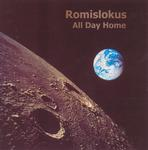

Home Artist links Label link

Romislokus - All Day Home
| Artist: | Romislokus |
| Title: | All Day Home |
| Label: | Independent |
| Length(s): | 45 minutes |
| Year(s) of release: | 2002 |
| Month of review: | [03/2003] |
Line up
Evgeniy Gorelov - keys
Mikhail Voronov - guitars
Yuri Smolnikov - guitars, vocals
Dmitry Shelemetev - drums
Maksim Karavaev - computers
Mihail Brovarnik - bass
Irina Yunakovskaya - cello
Tracks
| 1) | Cool | 3.35
|
| 2) | Dreg | 4.32
|
| 3) | L'amour | 2.55
|
| 4) | If | 5.37
|
| 5) | Freedom | 4.17
|
| 6) | I'm Tired | 4.08
|
| 7) | Name | 2.51
|
| 8) | Persici | 4.37
|
| 9) | Tree By The Wall | 6.09
|
| 10) | Captain Zero | 5.42
|
Summary
All Day Home is Romislokus third release.
The music
As on their previous albums, Romislokus play a highly poppy take on progressive. Previously they managed to make up for that, or at least somewhat, by adding the odd bit of quirky sounds and alternative instruments, aside from some ethnic stuff. On All Day Home, however, they seem to have almost dropped the quirkyness and ehtnic influences. This has resulted in an album of pretty poppy tracks. Granted, some of them have quite a nice atmosphere (such as If), or good moments (Freedom) but the remaining ones are not very interesting. What I do like about this album is that they included a song in Italian (Persici) and French (L'amour), remarkably both sung with a pretty good pronunciation.
Conclusion
As before Romislokus makes very poppy progressive, however, those elements of interest to the lovers of progressive music seem to lose out to others. With that I'd have to conclude that most of this album leaves me uninterested at best. Not a winner.
© Roberto Lambooy